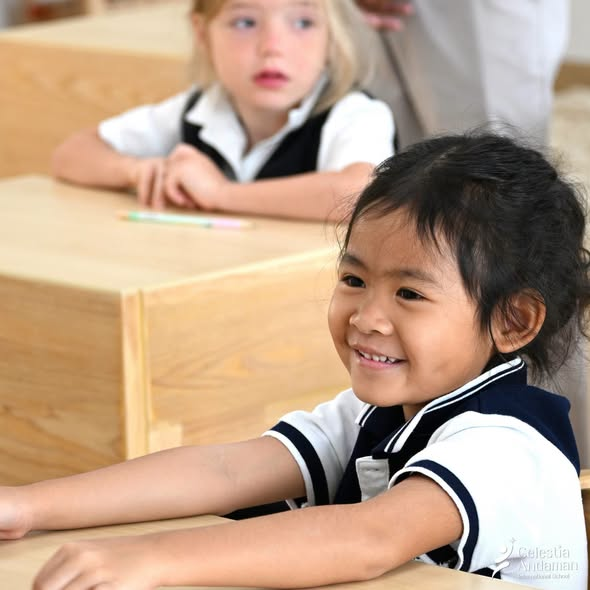

To nurture happiness in a caring environment.
Inspiring young children to love learning and grow with confidence, curiosity and respect for the world.
Why CAIS
CAIS brings together British learning foundations, close relationships, outdoor experience and mindfulness in a calm community for young children.

Our educational direction
Children participate, ask questions and try again more readily when they feel safe, valued and connected. That belief shapes how CAIS describes its environment, relationships and learning experiences.
Inspiring young children to love learning and grow with confidence, curiosity and respect for the world.
Children are nurtured with care, encouraged to explore through play and meaningful experiences, and supported academically, socially, emotionally and physically.
What parents should be able to see
Warm routines and attentive relationships help children feel ready to participate.
Teachers notice individual interests, confidence and next steps—not only completed work.
Movement and first-hand experience give language, number and science something real to connect with.
Local stories, places and traditions can help children understand the community they live in.
Open communication and shared experiences connect learning between school and home.
Calm moments help children notice feelings, practise attention and respond with care.
The philosophy, Vision and Mission above reflect the current CAIS website. Specific practices, Thai-culture programme details and parent communication process require school confirmation before production.

The people behind the school
The current school website names Dr. Somsak Kongthong, Dr. Phatcharaphorn Phermkaew and Mr. Yingsak Suravanobol as the founding Management Team.
Their shared direction combines international education experience with an understanding of global standards, Thai language and culture, and the needs of local and international families.
Trust should be easy to verify
A concise child-protection and safeguarding summary, with the policy owner and contact route.
Approved leadership and educator profiles, qualifications, roles and educational perspective.
What families can expect from observation, feedback, reports and conversations with teachers.
The confirmed EYFS and Key Stage 1 framework, learning areas and transition between stages.
Continue the journey
Explore the curriculum or visit the school to experience the people and environment directly.